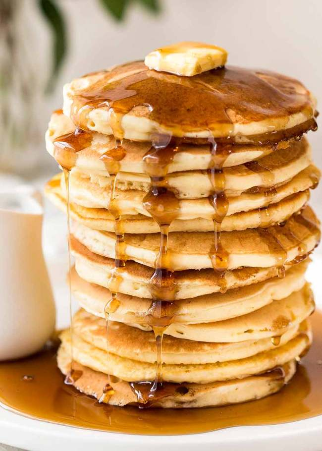

Pancakes

Sweet Pancake
A pancake (or hotcake, griddlecake, or flapjack) is a flat cake, often thin and round, prepared from a starch-based batter that may contain eggs, milk and butter and cooked on a hot surface such as a griddle or frying pan, often frying with oil or butter. It is a type of batter bread.
Ingredients
- 1 cup | (150g) of plain flour
- 2 medium eggs
- ½ cup (125 mls) of evaporated milk
- 2 tablespoons of margarine
- 1 cup (250 mls) of water
- ¼ teaspoon of salt
- 6 teaspoons of sugar (or to taste)
- Ground Chilli Pepper (to taste)
- Vegetable oil
Steps
- Put the margarine is a small bowl and melt in the microwave. You can also place the bowl in a bigger bowl of hot water to melt the margarine.
- Break the two eggs into the melted margarine and beat till smooth. Then add ½ cup of water.
- Add the flour and mix well till there are minimal lumps.
- Add the milk, salt, sugar, ground pepper and the remaining ½ cup of water, stir well.
- Blend the mix using a liquid blender. This will give the pancake batter the smoothest consistency. If you don't want to blend it, no problem, just mix the ingredients very well so that the lumps are minimal.
- Set a frying pan over medium heat. Add a few drops of vegetable oil. Just enough to lubricate the frying pan.
- When hot, pour some pancake batter into the frying pan. Tilt the pan so that the batter coats the surface of the pan evenly. This should be a very thin coat.
- Fry the underside of the pancake for approximately 1 minute, shaking the pan from time to time till the pancake comes loose. You can also loosen it with the spatula. Check the underside to be sure it has browned to your liking, preferably light brown.
- Flip the pancake so you can fry the top side as well.
- The pancake is done when both sides are light brown.